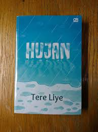

Hujan menceritakan tentang cinta, tentang persahabatan, tentang perpisahan, tentang melupakan dan tentang hujan.  Tema yang diusung oleh sang penulis tidak sesederhana novel romantis pada umumnya. Porsinya tidak hanya untuk seputar cinta melainkan ada bumbu-bumbu ilmiahnya. Penggambaran Tere Liye tentang teknologi dan penjelasan ilmiah lainnya dikemas sederhana namun benar-benar membuat pembaca mengerti. Tokoh yang diusung tidak terlalu banyak. Tokoh utama bernama Lail, perempuan yang menjadi yatim piatu karena bencana alam yang terjadi kala itu. Ia menyaksikan sendiri ibunya tidak selamat. Lail nanti akan menjadi perawat. Tokoh lain yaitu Esok, Claudia, Maryam. Ketika membaca novel ini, pembaca akan merasakan bagaimana harus tegar ketika ditempa masalah, melangkah maju ketika masalah begitu berat, dan rasanya jatuh cinta. Cemburu, rindu, dan bertemu kembali setelah sekian lama tidak bertemu. Seperti novel karya Tere Liye yang lain, novel Hujan ini penuh kejutan dan plot-twist yang tidak terduga sehingga pembaca akan dibuat terkejut dibuatnya.